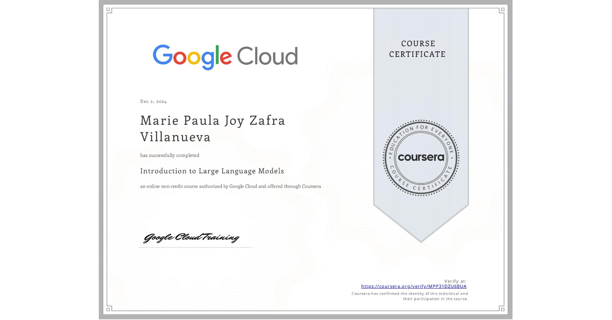
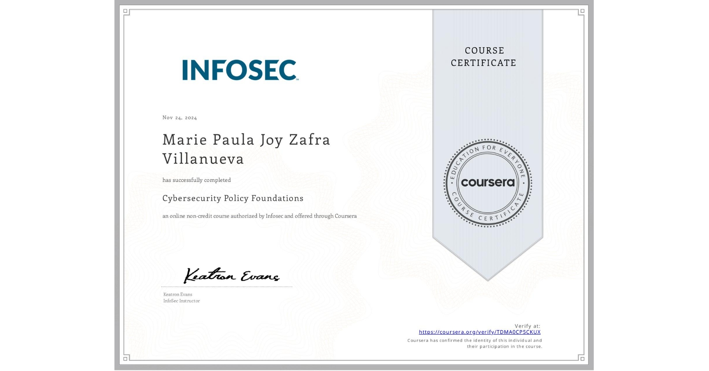
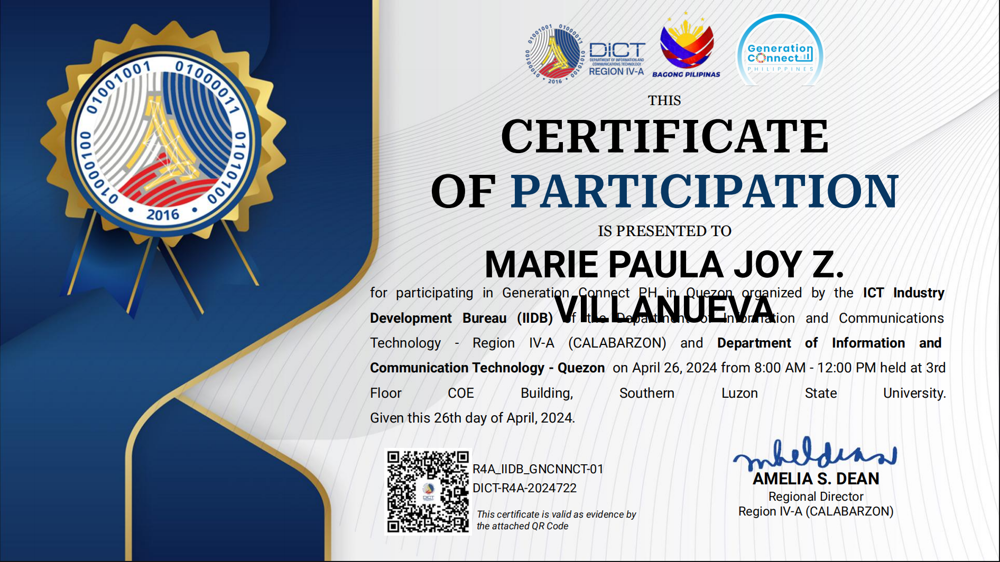

National Certificate II for Computer Systems Servicing
Successfully completed the National Certificate II in Computer Servicing (CSS NCII)
Introduction to Responsible AI
Trained in implementing AI technologies to ensure thical sustainable and transparent development and deployment.

Introduction to Large Language Model
Gained understanding of training LLMs with large datasets to generate human-like responses and improve performance through fine-tuning and prompt engineering.
Introduction to Generative AI
Gained foundational understanding of generative AI models and their applications, that includes GANs, Variational Autoencoders (VAEs), and Transformer.

Cybersecurity Policy Foundation
Gained proficiency in understanding and applying cybersecurity frameworks for risk management, incident response and data protections.

Generation Connect
Participated in Generation Connect PH in Quezon organized by ICT Industry Development Bureau